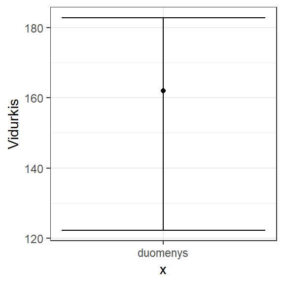
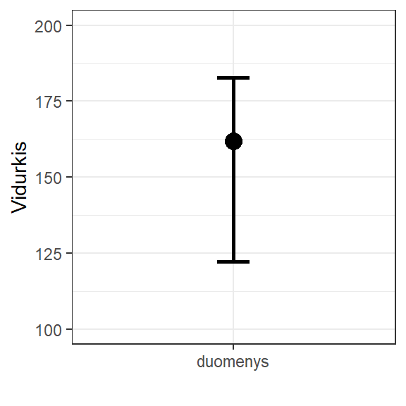
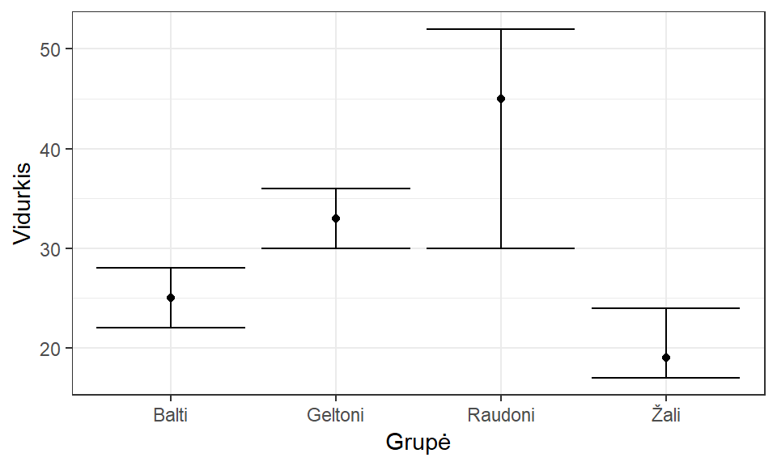
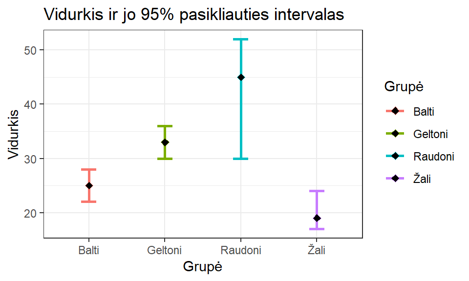
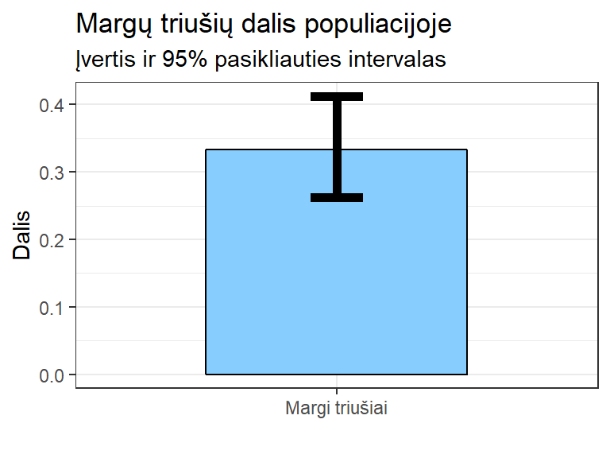
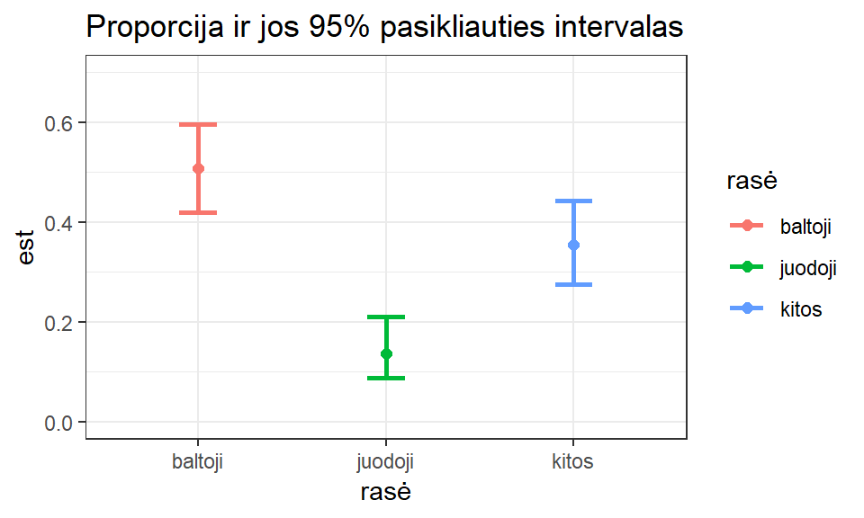
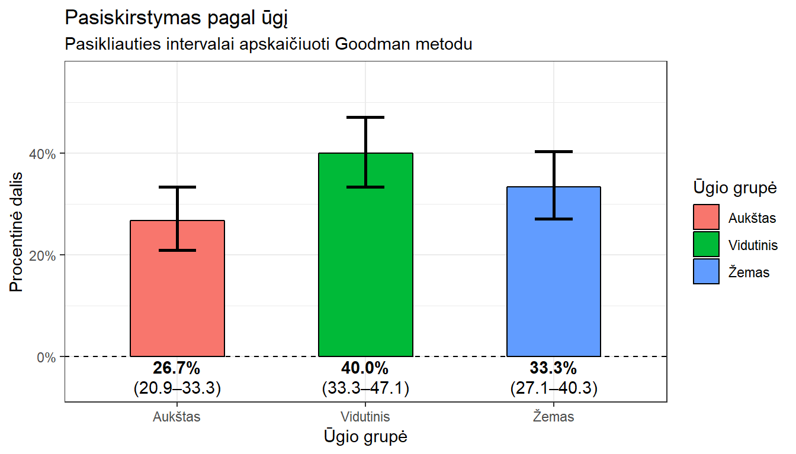

8. Pasikliautinieji intervalai (PI)
Statistinės išvados yra pagal imties (kuri yra mažesnė už generalinę aibę) duomenis padarytos išvados apie visą generalinę aibę (GA). Tam, kad išvados būtų teisingos, – pirmiausia, imtis privalo būti reprezentatyvi: sudaryta tinkamu būdu taip, kad atspindėtų esmines generalinės aibės savybes. Tada pagal duomenis ir iškeltą klausimą reikia pasirinkti tinkamą analizės metodą. Atkreipkite dėmesį, kad daugelis statistikos metodų sukurti darant prielaidą, kad GA yra be galo didelė. Tad mūsų GA turi būti pakankamai didelė, kad ši prielaida galiotų.
Statistinės išvados daromos:
- tikrinant statistines hipotezes (taikant statistinius kriterijus);
- sudarant įverčius (taškinius įverčius ir pasikliauties intervalus).
Pasikliauties intervalai dar vadinami pasikliautinaisiais intervalais. Šio užsiėmimo metu nagrinėsime pasikliauties intervalų (PI) sudarymo metodus.
Darbui reikalingi R paketai: data.table, DescTools, pander, biostat, ggplot2, tidyverse.
# Atsisiųskite iš saugyklos „GitHub“:
devtools::install_github("GegznaV/biostat", dependencies = TRUE)Korektiško vidurkio pasikliauties intervalo skaičiavimo žingsniai:
- Nusibraižome duomenis, įsitikiname, kad vidurkis yra prasmingas;
- Patikriname, ar nepažeidžiamos prielaidos (pvz., ar duomenys skirstosi normaliai, ar jų pakankamai daug ir kt.), kuriomis grindžiamas statistinis modelis (intervalo skaičiavimo būdas);
- Skaičiuojame pasikliauties intervalą.
Šie žingsniai pritaikomi ir kitų, ne tik vidurkio, pasikliauties intervalų skaičiavimui. Svarbu nusibraižyti duomenis, patikrinti prielaidas ir tik po to atlikti skaičiavimus.
8.1 Nubraižyti lentele pateiktus PI
Dažna užduotis analizuojant duomenis – vizualizuoti pasikliauties intervalus. Sakykime, kad duota lentelė, kurioje taškinis vidurkio įvertis ir jo pasikliauties intervalas. Šiuos duomenis reikia įsikelti į „R“ ir nubraižyti.
| Vidurkis | PIviršutinis | PIapatinis |
|---|---|---|
| 162.0 | 122.3 | 182.8 |
Lentelė pateikta tinklapyje, tad ją patogu nukopijuoti ir nuskaityti naudojant funkciją fread() iš paketo data.table. Užkraukime reikiamus paketus.
library(data.table)
library(tidyverse)
Sys.setlocale(locale = "Lithuanian")Po to parašykime komandą fread(""), jos skliaustuose padėkime kabutes. Tada pele pažymėkite visą lentelės 8.1 turinį, jį nukopijuokite ir įklijuokite į dokumentą tarp kabučių kaip rodoma pavyzdyje žemiau. Galime pridėti papildomų tarpų, kad sulygiuotume stulpelius, bet tai nėra būtina. Įvykdykime komandą ir patikrinkime, ar duomenys nuskaityti teisingai.
duomenys1 <- fread(
"Vidurkis PIviršutinis PIapatinis
162.0 122.3 182.8")
glimpse(duomenys1)
## Observations: 1
## Variables: 3
## $ Vidurkis <dbl> 162
## $ PIviršutinis <dbl> 122.3
## $ PIapatinis <dbl> 182.8
duomenys1
## Vidurkis PIviršutinis PIapatinis
## 1: 162 122.3 182.8Kopijuojant lentelę iš tinklapio, stulpelių skirtukai yra tabuliacijos, kurias
fread() atpažįsta automatiškai. Todėl lentelę nuskaito teisingai.
Dabar šiuos duomenis atvaizduokime naudodami ggplot2. Paklaidų ir intervalų braižymui naudinga funkcija geom_errorbar(), kuriai reikia nurodyti apatinę ir viršutinę ribas, kurios surašytos atskirame duomenų lentelės stulpelyje. Turime tik vieną grupę, todėl x’ui suteikiame bet kokį pavadinimą kabutėse.
ggplot(duomenys1, aes(x = "duomenys")) +
geom_point(aes(y = Vidurkis)) +
geom_errorbar(aes(ymin = PIviršutinis, ymax = PIapatinis))
Šiek tiek padailinkime grafiką:
ggplot(duomenys1, aes(x = "duomenys")) +
geom_point(aes(y = Vidurkis), size = 4) +
geom_errorbar(aes(ymin = PIviršutinis, ymax = PIapatinis),
width = .1,
size = 1) +
lims(y = c(100, 200)) +
labs(x = "")
Apibendrinančias statistikas, tokias kaip vidurkis ar mediana, duomenų vizualizavimo ekspertai rekomenduoja atvaizduoti taškais ar linijomis, bet ne stulpeliais.
Vidurkius ir medianas stulpeliais atvaizduoti nekorektiška, nes taip akcentuojama apatinė matavimo skalės dalis, kur duomenų galbūt nėra, ir ignoruojama viršutinė dalis, kur duomenys yra. Deja, centro padėties suvestinų atvaizdavimo būdas stulpeliais plačiai paplitęs.
| Vidurkis | PIvirš | PIapat |
|---|---|---|
| 42,53 | 41,02 | 44,01 |
Jei sveikosios ir dešimtosios dalies skirtukas yra kablelis (pavyzdys – lentelė 8.2), programa automatiškai jo neatpažįsta, tad tai reikia nurodyti naudojant parametrą dec:
duomenys2 <- fread(dec = ",",
"Vidurkis PIvirš PIapat
42,53 41,02 44,01")
glimpse(duomenys2)
## Observations: 1
## Variables: 3
## $ Vidurkis <dbl> 42.53
## $ PIvirš <dbl> 41.02
## $ PIapat <dbl> 44.01
duomenys2
## Vidurkis PIvirš PIapat
## 1: 42.53 41.02 44.01| Grupė | Vidurkis | PIviršutinis | PIapatinis |
|---|---|---|---|
| Balti | 25 | 22 | 28 |
| Žali | 19 | 17 | 24 |
| Raudoni | 45 | 30 | 52 |
| Geltoni | 33 | 30 | 36 |
Jei norime, kad fread() tekstinius kintamuosius nuskaitytų kaip kategorinius, reikia naudoti parametrą stringsAsFactors = TRUE:
duomenys3 <- fread(stringsAsFactors = TRUE,
"Grupė Vidurkis PIviršutinis PIapatinis
Balti 25 22 28
Žali 19 17 24
Raudoni 45 30 52
Geltoni 33 30 36")
glimpse(duomenys3)
## Observations: 4
## Variables: 4
## $ Grupė <fct> Balti, Žali, Raudoni, Geltoni
## $ Vidurkis <int> 25, 19, 45, 33
## $ PIviršutinis <int> 22, 17, 30, 30
## $ PIapatinis <int> 28, 24, 52, 36
duomenys3
## Grupė Vidurkis PIviršutinis PIapatinis
## 1: Balti 25 22 28
## 2: Žali 19 17 24
## 3: Raudoni 45 30 52
## 4: Geltoni 33 30 36stringsAsFactors = FALSE, rezultatą pavadinkite „duomenys3chr“. Palyginkite, kuo skiriasi „duomenys3“ ir „duomenys3chr“.
Bazinis kodas atvaizduoti duomenis. Pastebėkite, kad x ašyje išdėstytos stulpelio Grupė reikšmės, todėl šio stulpelio pavadinimas rašomas ne kabutėse.
ggplot(duomenys3, aes(x = Grupė)) +
geom_point(aes(y = Vidurkis)) +
geom_errorbar(aes(ymin = PIviršutinis, ymax = PIapatinis))
Pagražintas grafikas:
ggplot(duomenys3, aes(x = Grupė, color = Grupė)) +
geom_errorbar(aes(ymin = PIviršutinis, ymax = PIapatinis),
width = 0.2,
size = 1) +
geom_point(aes(y = Vidurkis), fill = "black", size = 2, shape = 23) +
labs(title = "Vidurkis ir jo 95% pasikliauties intervalas")
Užduotis 8.3
- Lentelė 8.4:
- Nuskaitykite ir vizualizuokite duomenis.
- Lentelė 8.5:
- Nuskaitykite duomenis.
- Proporcijas ir jų pasikliauties intervalus atvaizduokite stulpeliais (geom_col()). Stulpelio spalva turi būti parinkta pagal medžio rūšį (Tree), o stulpelio apvadas privalo būti juodas.
- Įvardinkite, trūkumus, kuriuos pastebite šioje lentelėje.
| Spalva | Vidurkis | PI_viršutinis | PI_apatinis |
|---|---|---|---|
| Juoda | 5,9 | 5,7 | 6,4 |
| Ruda | 5,5 | 5,2 | 5,8 |
| Gelsva | 5,3 | 4,9 | 5,6 |
| Tree | Count | Total | Proportion | lower_ci | upper_ci | |
|---|---|---|---|---|---|---|
| 1 | Douglas fir | 70 | 156 | 0.4487 | 0.369115906 | 0.53030534 |
| 2 | Ponderosa pine | 79 | 156 | 0.5064 | 0.425290653 | 0.58728175 |
| 3 | Grand fir | 3 | 156 | 0.0192 | 0.003983542 | 0.05516994 |
| 4 | Western larch | 4 | 156 | 0.0256 | 0.007029546 | 0.06434776 |
Jei lentelė 8.5 būtų pateikta tokiu pavidalu, kokį matote žemiau (be tabuliacijų), tada stulpelių, kuriuose yra keli žodžiai atskirti tarpu, reikšmes privalėtumėte rašyti kabutėse, pvz., "Douglas fir" arba \"Douglas fir\". Kitu atveju duomenys būtų nuskaityti neteisingai arba apskritai nebūtų nuskaityti.
## V1 Tree Count Total Proportion lower_ci upper_ci
## 1: 1 Douglas fir 70 156 0.4487 0.369115906 0.53030534
## 2: 2 Ponderosa pine 79 156 0.5064 0.425290653 0.58728175
## 3: 3 Grand fir 3 156 0.0192 0.003983542 0.05516994
## 4: 4 Western larch 4 156 0.0256 0.007029546 0.06434776Jei stulpelyje yra keli žodžiai, juos reikia įterpti į papildomas dvigubas kabutes. Jei neįterpiama – nuskaitoma neteisingai:
neteisingai <- fread(
"Pavadinimas Reikšmė
Pirmas 1
Du žodžiai 2
Keli žodžiai 3
")
## Warning in fread("Pavadinimas Reikšmė\nPirmas 1\nDu žodžiai 2\nKeli žodžiai
## 3\n"): Stopped early on line 3. Expected 2 fields but found 3. Consider
## fill=TRUE and comment.char=. First discarded non-empty line: <<Du žodžiai
## 2>>
neteisingai
## Pavadinimas Reikšmė
## 1: Pirmas 1Keli variantai, kaip nuskaitymą atlikti teisingai:
- Visą tekstą dėti į viengubas kabutes, o reikiamų stulpelių reikšmes – į dvigubas:
teisingai1 <- fread(
'Pavadinimas Reikšmė
Pirmas 1
"Du žodžiai" 2
"Keli žodžiai" 3
')
teisingai1
## Pavadinimas Reikšmė
## 1: Pirmas 1
## 2: Du žodžiai 2
## 3: Keli žodžiai 3- Visą tekstą dėti į dvigubas kabutes, o prieš stulpeliuose esančias dvigubas kabutes pridėti atgal pasvirusį brūkšnį (
\), kaip parodyta šiame pavyzdyje:
teisingai2 <- fread(
"Pavadinimas Reikšmė
Pirmas 1
\"Du žodžiai\" 2
\"Keli žodžiai\" 3
")
teisingai2
## Pavadinimas Reikšmė
## 1: Pirmas 1
## 2: Du žodžiai 2
## 3: Keli žodžiai 38.2 Klasikiniai metodai PI skaičiuoti
8.2.1 Vidurkio PI, kai GA dispersija žinoma
Kai generalinės aibės dispersija žinoma, vidurkio PI galima skaičiuoti pagal formulę (8.1). Situacija, kai tikrasis vidurkis nežinomas, o išsisklaidymas aplink jį – dispersija – žinoma, yra tik hipotetinė. Tačiau formulė ganėtinai paprasta ir mokymosi tikslais iliustruoti, kaip konstruojamas PI, tinkama. Ši formulė taip pat naudojama, kai imties dydis pakankamai didelis.
\[\begin{equation} \hat{\mu}_{1,2} = \overline{X} \mp z_{\left(\frac{1-Q}{2}\right)}{\sigma \over \sqrt{n}} \tag{8.1} \end{equation}\]Formulėje:
\(\hat{\mu}_{1}\) – apatinė vidurkio pasikliauties intervalo riba (mažesnis skaičius);
\(\hat{\mu}_{2}\) – viršutinė vidurkio pasikliauties intervalo riba (didesnis skaičius);
\(\overline{X}\) – imties vidurkis;
\(\sigma\) – generalinės aibės standartinis nuokrypis (arba imties standartinis nuokrypis, jei duomenų pakankamai daug);
\(n\) – imties dydis;
\(Q\) – pasikliovimo lygmuo (tikimybė);
\({\left(\frac{1-Q}{2}\right)}\) – galime pažymėti kaip tikimybę \(\alpha\);
\(z_{\alpha}\) – \(z\) koeficientas – daugiklis, dar vadinamas standartinio normaliojo skirstinio \(1-\alpha\) lygmens kvantiliu (skaičius, priklausantis nuo norimo pasikliovimo lygmens). Jis imamas iš lentelių arba apskaičiuojamas programomis R, GeoGebra ar kitomis.
Ši formulė tinka normaliai pasiskirsčiusiems duomenims, arba duomenims, kurių yra tiek daug, kad galioja centrinė ribinė teorema.
Formulė susideda iš 3 dalių: taškinis vidurkio įvertis, koeficientas, priklausantis nuo norimo pasikliovimo lygmens, ir standartinė vidurkio paklaida. Ar matote jas visas?
Siekiant apsiskaičiuoti reikiamą imties dydį, kad būtų pasiektas norimas tikslumas (intervalo ilgis), gali būti naudojama iš (8.1) formulės išvesta lygtis (8.3).
Jei norite skaičiuoti automatiškai, štai R kodas:
data(npk)
derlius <- npk$yield# --- Keisti tik šias eilutes ------------------------------------------------
# Pasirenkame duomenų vektorių `x` ir pasikliovimo lygmenį – tikimybę `Q`.
# Jei turite suvestinę, vietoje `x` įrašykite kintamųjų
# `n`, `st_nuokrypis` ir `vidurkis` reikšmes.
x <- derlius
Q <- 0.95
# ----------------------------------------------------------------------------
n <- length(x)
st_nuokrypis <- sd(x)
vidurkis <- mean(x)
# --- Toliau esančio kodo nekeisti -------------------------------------------
# Taikome formulę su z koeficientu:
z <- qnorm((1 - Q) / 2, lower.tail = FALSE)
paklaida <- z * st_nuokrypis/sqrt(n)
apatinė_riba <- vidurkis - paklaida
viršutinė_riba <- vidurkis + paklaida
# Rezultatai:
vidurkio_pi_z <- c(vidurkis = vidurkis,
PI_apatine_riba = apatinė_riba,
PI_virsutine_riba = viršutinė_riba)
# ----------------------------------------------------------------------------Rezultatas:
vidurkio_pi_z
## vidurkis PI_apatine_riba PI_virsutine_riba
## 54.87500 52.40543 57.34457Iki vieno skaičiaus po kablelio suapvalintas rezultatas:
round(vidurkio_pi_z, digits = 1)
## vidurkis PI_apatine_riba PI_virsutine_riba
## 54.9 52.4 57.3Užduotis 8.4
- Išmatuotas \(100\) studentų cholesterolio kiekis kraujyje. Gautas vidurkis \(310\frac{\mu mol}{l}\). Koks cholesterolio kiekio kraujyje vidurkio \(95\%\) pasikliauties intervalas, jeigu šio dydžio standartinis nuokrypis studentų populiacijoje yra \(35\frac{\mu mol}{l}\)?
8.2.2 Vidurkio PI, kai GA dispersija nežinoma
Kai GA dispersija nežinoma, tada vidurkio PI skaičiavimo formulėje naudojame dispersiją, apskaičiuotą iš duomenų. Tokiu atveju vietoje z koeficiento reikia naudoti t koeficientą, kurio dydis priklauso nuo imties dydžio. Tad tokia formulė kaip (8.2) savo surinktiems duomenims analizuoti yra naudingesnė.
\[\begin{equation} \hat{\mu}_{1,2} = \overline{X} \mp t_{\left(\frac{1-Q}{2}\right)}(n-1) {S \over \sqrt{n}} \tag{8.2} \end{equation}\]Formulėje:
\(\hat{\mu}_{1}\) – apatinė vidurkio pasikliauties intervalo riba (mažesnis skaičius);
\(\hat{\mu}_{2}\) – viršutinė vidurkio pasikliauties intervalo riba (didesnis skaičius);
\(\overline{X}\) – imties vidurkis;
\(S\) – imties standartinis nuokrypis;
\(n\) – imties dydis;
\(Q\) – pasikliovimo lygmuo (tikimybė);
\({\left(\frac{1-Q}{2}\right)}\) – galime pažymėti kaip tikimybę \(\alpha\);
\(t_{\alpha}(n-1)\) – daugiklis, dar vadinamas Stjudento koeficientu arba Stjudento skirstinio (su \(n-1\) laisvės laipsnių) \(1-\alpha\) lygmens kvantiliu (skaičius, priklausantis nuo norimo pasikliovimo lygmens). Jis imamas iš lentelių arba apskaičiuojamas programomis R, GeoGebra ar kitomis.
Ši formulė tinka normaliai pasiskirsčiusiems duomenims, arba duomenims, kurių yra tiek daug, kad galioja centrinė ribinė teorema.
Pamenat, formulė susideda iš 3 dalių. Ar ir šiuo atveju matote jas visas?
Štai R kodas, jei norite, kad R apskaičiuotų už jus:
data(npk)
derlius <- npk$yield# --- Keisti tik šias eilutes ------------------------------------------------
# Pasirenkame duomenų vektorių `x` ir pasikliovimo lygmenį – tikimybę `Q`.
# Jei turite suvestinę, vietoje `x` įrašykite kintamųjų
# `n`, `st_nuokrypis` ir `vidurkis` reikšmes.
x <- derlius
Q <- 0.95
# ----------------------------------------------------------------------------
n <- length(x)
st_nuokrypis <- sd(x)
vidurkis <- mean(x)
# --- Toliau esančio kodo nekeisti -------------------------------------------
# Taikome formulę su t koeficientu:
t <- qt((1 - Q) / 2, df = (n - 1), lower.tail = FALSE)
paklaida <- t * st_nuokrypis/sqrt(n)
apatinė_riba <- vidurkis - paklaida
viršutinė_riba <- vidurkis + paklaida
vidurkio_pi_t <- c(vidurkis = vidurkis,
PI_apatine_riba = apatinė_riba,
PI_virsutine_riba = viršutinė_riba)
# ----------------------------------------------------------------------------Rezultatas:
vidurkio_pi_t
## vidurkis PI_apatine_riba PI_virsutine_riba
## 54.87500 52.26848 57.48152Iki vieno skaičiaus po kablelio suapvalintas rezultatas:
round(vidurkio_pi_t, digits = 1)
## vidurkis PI_apatine_riba PI_virsutine_riba
## 54.9 52.3 57.5Formulė su \(t\) koeficientu yra universalesnė, tinka, kai duomenų nedaug. Visgi, jų turi būti pakankamai, o ne vos keli taškai. Jei taškų iki 15 – pasiskirstymas privalo būti idealiai normalusis.
Užduotis 8.5 Užsikraukite duomenis, naudodami komandą data(swiss).
- Duomenų lentelė swiss:
- Apskaičiuokite kintamojo Fertility reikšmių vidurkio 95% pasikliauties intervalą.
- Ar šie duomenys tenkina prielaidas vidurkio pasikliauties intervalui skaičiuoti naudojant formulę?
Rcmdr vidurkio PI skaičiavimui
Vidurkio pasikliauties intervalą pagal (8.2) lygtį galime skaičiuoti naudodami Rcmdr įskiepį RcmdrPlugin.EZR.2 (diegimo instrukcijos šios knygos prieduose). Užkrovus šį įskiepį atsiranda mygtukas pavadinimu „EZR“ (pav. 8.1).
Pav. 8.1: RcmdrPlugin.EZR.2 meniu mygtukas R Commander meniu juostoje.
Pav. 8.2: Vidurkio pasikliauties intervalo skaičiavimas pagal (8.2) formulę naudojant Rcmdr. Atsidariusioje lentelėje įrašome reikiamus skaičius: vidurkį, standartinį nuokrypį ir imties dydį. Sveikąją ir dešimtąją skaičiaus dalį reikia atskirti tašku (pvz., 10.254), o ne kableliu.
8.2.3 Imties dydžio skaičiavimas norimam vidurkio PI ilgiui
Iš formulės (8.1) galima išsireikšti imties dydį, kurio reikia norimam tikslumui pasiekti. Tai aprašo lygtis (8.3):
\[\begin{equation} n = \left( {2 \cdot \sigma\cdot z_{\left(\frac{1-Q}{2}\right)} } \over \Delta\hat{\mu} \right)^2 \tag{8.3} \end{equation}\]Formulėje:
\(n\) – imties dydis;
\(\Delta\hat{\mu}\) – vidurkio pasikliauties intervalo ilgis;
\(\sigma\) – (hipotetinis) standartinis nuokrypis;
\(Q\) – pasikliovimo lygmuo (tikimybė);
\({\left(\frac{1-Q}{2}\right)}\) – galime pažymėti kaip tikimybę \(\alpha\);
\(z_{\alpha}\) – \(z\) koeficientas – daugiklis, dar vadinamas standartinio normaliojo skirstinio \(1-\alpha\) lygmens kvantiliu (skaičius, priklausantis nuo norimo pasiliovimo lygmens).
Rezultatą apvaliname iki sveikųjų skaičių į didesniąją pusę, tarkim 60,02 → 61. Kitu atveju intervalas bus per trumpas. Šio tipo skaičiavimą galima atlikti papildiniu Rcmdr (pav. 8.3).
Pav. 8.3: Papildinio RcmdrPlugin.EZR.2 naudojimas reikiamo imties dydžio skaičiavimui norimam pasikliauties intervalo pločiui gauti.
Užduotis 8.6 Išmatuota 93 studentų cholesterolio koncentracija kraujyje. Gautas vidurkis yra \(308\frac{\mu mol}{l}\).
- Koks yra cholesterino kiekio kraujyje 99% pasikliauties intervalas, jeigu imties standartinis nuokrypis – \(35\frac{\mu mol}{l}\)?
- Kokio imties dydžio reikia, kad intervalo ilgis būtų \(30\frac{\mu mol}{l}\)?
- Kokio imties dydžio reikia, kad intervalo ilgis būtų \(2\) vienetais mažesnis, nei gautas (a) punkte?
8.2.4 Proporcijos PI
Kategoriniai kintamieji gali būti skirstomi į:
- dvireikšmius – galinčius įgyti dvi skirtingas reikšmes, pvz., gėrimas tik „šiltas“ arba „šaltas“ \((k = 2)\);
- daugiareikšmius – galinčius įgyti daugiau nei 2 skirtingas reikšmes, pvz., driežas „raudonas“, „juodas“, „geltonas“, „žalias“ \((k > 2)\).
Čia \(k\) – kategorijų skaičius. Todėl proporcijos taip pat skirstomos į dvireikšmių kintamųjų proporcijas (arba „binomines“ proporcijas, angl., binomial proportion) ir daugiareikšmių kintamųjų proporcijas (arba „multinomines“ proporcijas, angl., multinomial proportion).
Primenu, kad norint skaičiuoti PI imtis turi būti sudaryta atsitiktinai. Kitaip PI neturi prasmės.
Pradedantiesiems rekomenduojama tokia proporcijos PI pasirinkimo schema:
- kai \(k = 2\) rinkitės koreguotą Wilson metodą. Jis tinka ir tada, kai proporcija \(p\) maža (netoli 0) arba didelė (netoli 1).
- kai \(k > 2\) ir kai kiekvienoje grupėje bent po 6 (geriausia bent po 10) narių ir grupių skaičius ne per didelis (sakykim, \(k < 10\)), rinkitės Goodman metodą (šis metodas tinkamas daugeliui praktiškai pasitaikančių situacijų);
- kai \(k > 2\) kiekvienoje grupėje daugmaž vienodas skaičius narių, rinkitės Sison-Glaz metodą. Metodas ypač tinka tada, kai grupėse narių mažai, o grupių labai daug. Bet jei yra bent viena pagal narių skaičių dominuojanti grupė, tada metodas duoda prastus rezultatus ir jo reiktų nesirinkti.
Šie metodai pasiekiami naudojant paketo DescTools funkcijas. Norint naudoti binominės proporcijos metodus, reikia žinoti, kiek mūsų imtyje yra narių iš viso (n) ir kiek iš jų turi mus dominančią savybę (x).
x <- 30 # Imtyje pasitaikiusių šaltų gėrimų skaičius
n <- 66 # Imties dydis
# Wilson metodas:
DescTools::BinomCI(x, n, method = "wilson")
## est lwr.ci upr.ci
## [1,] 0.4545455 0.3402413 0.5738499
# Koreguotasis Wilson metodas:
DescTools::BinomCI(x, n, method = "modified wilson")
## est lwr.ci upr.ci
## [1,] 0.4545455 0.3402413 0.5738499Rezultatas yra matrica (todėl vėliau ją versime į duomenų lentelę), kurios stulpeliai: est – proporcijos taškinis įvertis, lwr.ci ir upr.ci – proporcijos pasikliauties intervalo apatinė ir viršutinė ribos.
„Multinominių“ proporcijų skaičiavimui reikia žinoti, kiek kurios grupės narių pasitaikė.
# Imtyje pasitaikė 24 juodi, 52 raudoni, 26 žali ir 43 geltoni driežiukai
x_2 <- c(24, 52, 26, 43)
DescTools::MultinomCI(x_2, method = "goodman")
## est lwr.ci upr.ci
## [1,] 0.1655172 0.09685563 0.2683888
## [2,] 0.3586207 0.25715494 0.4745463
## [3,] 0.1793103 0.10742403 0.2839959
## [4,] 0.2965517 0.20314729 0.4107643Rezultatų matricoje kiekvienai grupei (juodi, raudoni, žali, geltoni) skirta atskira eilutė.
# Imtyje pasitaikė 24 juodi, 22 raudoni, 26 žali ir 23 geltoni driežiukai
x_3 <- c(24, 22, 26, 23)
DescTools::MultinomCI(x_3, method = "sisonglaz")
## est lwr.ci upr.ci
## [1,] 0.2526316 0.1578947 0.3661081
## [2,] 0.2315789 0.1368421 0.3450555
## [3,] 0.2736842 0.1789474 0.3871608
## [4,] 0.2421053 0.1473684 0.3555818Pavyzdys 1: triušiai
Sakykime, visiškai atsitiktinai sudarytoje imtyje 150 triušių ir 50 iš jų yra margi. Tad margų triušių dalies generalinėje aibėje 95% pasikliauties intervalas yra 0,26-0,41:
(prop_pi <- DescTools::BinomCI(x = 50, n = 150, method = "wilson"))
## est lwr.ci upr.ci
## [1,] 0.3333333 0.2628876 0.4121024prop_pi_df <- as.data.frame(prop_pi)
ggplot(prop_pi_df, aes(x = "Margi triušiai")) +
geom_col(aes(y = est), color = "black", fill = "skyblue1", width = 0.5) +
geom_errorbar(aes(ymin = lwr.ci, ymax = upr.ci), size = 2, width = 0.1) +
labs(x = "",
y = "Dalis",
title = "Margų triušių dalis populiacijoje",
subtitle = "Įvertis ir 95% pasikliauties intervalas")
Pavyzdys 2: rasinė įvairovė
library(tidyverse)
library(DescTools)Įsikeliame duomenis.
data(birthwt, package = "MASS")Sudarome norimo požymio (rasės) dažnių lentelę.
birthwt %>% count(race)
## # A tibble: 3 x 2
## race n
## <int> <int>
## 1 1 96
## 2 2 26
## 3 3 67Rasių atžvilgiu duomenys buvo surinkti visiškai atsitiktinai, todėl pagal imtį galime spręsti apie pasiskirstymą generalinėje aibėje – sudaryti pasikliautinuosius intervalus. Rasių kodų reikšmės: 1 – baltoji rasė, 2 – juodoji rasė, 3 – kitos rasės. Norėdami išlaikyti grupių pavadinimus, duomenis pateikiame tokiu formatu – "pavadinimas" = skaičius:
rasiu_pi_matrica <- MultinomCI(x = c("baltoji" = 96,
"juodoji" = 26,
"kitos" = 67),
method = "goodman")
rasiu_pi_matrica
## est lwr.ci upr.ci
## baltoji 0.5079365 0.42005803 0.5953273
## juodoji 0.1375661 0.08730632 0.2100988
## kitos 0.3544974 0.27499693 0.4429394Duomenų matricą paverčiame į duomenų lentelę, eilučių pavadinimus perkeliame į stulpelį „rasė“.
rasiu_pi_lentele <-
as.data.frame(rasiu_pi_matrica) %>%
rownames_to_column("rasė")
rasiu_pi_lentele
## rasė est lwr.ci upr.ci
## 1 baltoji 0.5079365 0.42005803 0.5953273
## 2 juodoji 0.1375661 0.08730632 0.2100988
## 3 kitos 0.3544974 0.27499693 0.4429394Duomenis atvaizduojame.
ggplot(rasiu_pi_lentele, aes(x = rasė, color = rasė)) +
geom_errorbar(aes(ymin = lwr.ci, ymax = upr.ci), width = 0.2, size = 1) +
geom_point(aes(y = est), size = 2) +
labs(title = "Proporcija ir jos 95% pasikliauties intervalas") +
ylim(0, 0.7)
Pavyzdys 3: grupės pagal ūgį
Šiek tiek įdomesnis pavyzdys, kaip apsiskaičiuoti daugiareikšmio kategorinio kintamojo reikšmių proporcijos pasikliauties intervalą iš duomenų.
Kad būtų aiškiau, duomenis susigeneruokime.
set.seed(100)
ugiu_pogrupiai <- data.frame(
ugiai = c(rep("Aukštas", 80), rep("Vidutinis", 120), rep("Žemas", 100)),
x = rnorm(n = 300, mean = 90, sd = 5),
y = rnorm(n = 300, mean = 110, sd = 6))glimpse(ugiu_pogrupiai)
## Observations: 300
## Variables: 3
## $ ugiai <fct> Aukštas, Aukštas, Aukštas, Aukštas, Aukštas, Aukštas, Au...
## $ x <dbl> 87.48904, 90.65766, 89.60541, 94.43392, 90.58486, 91.593...
## $ y <dbl> 98.86733, 103.88861, 103.72933, 106.09227, 112.29610, 11...head(ugiu_pogrupiai)
## ugiai x y
## 1 Aukštas 87.48904 98.86733
## 2 Aukštas 90.65766 103.88861
## 3 Aukštas 89.60541 103.72933
## 4 Aukštas 94.43392 106.09227
## 5 Aukštas 90.58486 112.29610
## 6 Aukštas 91.59315 116.19140dazniu_lentele <- ugiu_pogrupiai %>%
group_by(ugiai) %>%
count() %>%
ungroup() %>%
mutate(is_viso = sum(n)) pander(dazniu_lentele)| ugiai | n | is_viso |
|---|---|---|
| AukÅ |
80 | 300 |
| Vidutinis | 120 | 300 |
| Žemas | 100 | 300 |
Dabartinė pander versija turi problemų su tarptautinių (t.p. ir lietuviškų) simbolių dekodavimu.
rez_matrica <- DescTools::MultinomCI(x = dazniu_lentele$n, method = "goodman")
rez <- as.data.frame(rez_matrica)
pander(rez)| est | lwr.ci | upr.ci |
|---|---|---|
| 0.2667 | 0.2092 | 0.3333 |
| 0.4 | 0.3334 | 0.4705 |
| 0.3333 | 0.2706 | 0.4026 |
Skaičių formatavimas gali būti vykdomas funkcija sprintf(). Formato kodas %.2f iššifruojamas taip:
- % reiškia, kad bus formato aprašymas;
- todėl norint, kad būtų atvaizduotas procentų ženklas, reikia padėti du procento simbolius iš eilės, pvz., %%.
- .2 – du skaičiai po kablelio;
- f – fiksuotas skaičių formatas (mūsų atveju, visą laiką 2 skaičiai po kablelio).
rez %>%
transmute(pi_graziau = sprintf("%.2f (%.2f–%.2f)", est, lwr.ci, upr.ci))
## pi_graziau
## 1 0.27 (0.21–0.33)
## 2 0.40 (0.33–0.47)
## 3 0.33 (0.27–0.40)Formatuojame 3 kintamuosius (est, lwr.ci ir upr.ci), todėl formato kodo užrašą naudojome 3 kartus.
Pastaba dėl %>% ir . naudojimo: pavyzdyje, esančiame žemiau, taškas nurodo, kurioje vietoje į funkciją reikia įdėti duomenų lentelę rez. Plačiau apie tai rašoma paketo magrittr tinklapyje (nuoroda ).
rez %>% print(.)
## est lwr.ci upr.ci
## 1 0.2666667 0.2091875 0.3332834
## 2 0.4000000 0.3333785 0.4705376
## 3 0.3333333 0.2705523 0.4026412Dabar visą analizę sujunkime į vieną grandinę. Joje yra funkcija do(), kuri naudojama vietoje summarize(), kai vienu metu reikia apskaičiuoti daugiau nei vieną skaičių (šiuo atveju, taškinį proporcijos įvertį ir jo pasikliauties intervalą).
prop_pi <- ugiu_pogrupiai %>%
group_by(ugiai) %>% count() %>% ungroup() %>%
mutate(is_viso = sum(n)) %>%
do(data.frame(ugiai = .$ugiai,
n = .$n,
DescTools::MultinomCI(x = .$n, method = "goodman"))
) %>%
mutate(ivertis_graziau = sprintf("%.1f%%", 100*est),
pi_graziau = sprintf("(%.1f–%.1f)", 100*lwr.ci, 100*upr.ci))Rezultatas:
glimpse(prop_pi)
## Observations: 3
## Variables: 7
## $ ugiai <fct> Aukštas, Vidutinis, Žemas
## $ n <int> 80, 120, 100
## $ est <dbl> 0.2666667, 0.4000000, 0.3333333
## $ lwr.ci <dbl> 0.2091875, 0.3333785, 0.2705523
## $ upr.ci <dbl> 0.3332834, 0.4705376, 0.4026412
## $ ivertis_graziau <chr> "26.7%", "40.0%", "33.3%"
## $ pi_graziau <chr> "(20.9–33.3)", "(33.3–47.1)", "(27.1–40.3)"head(prop_pi)
## ugiai n est lwr.ci upr.ci ivertis_graziau pi_graziau
## 1 Aukštas 80 0.2666667 0.2091875 0.3332834 26.7% (20.9–33.3)
## 2 Vidutinis 120 0.4000000 0.3333785 0.4705376 40.0% (33.3–47.1)
## 3 Žemas 100 0.3333333 0.2705523 0.4026412 33.3% (27.1–40.3)Pasikliauties intervalus nusibraižykime:
ggplot(prop_pi, aes(x = ugiai, fill = ugiai)) +
geom_col(aes(y = est),
color = "black",
width = 0.5) +
geom_errorbar(aes(ymin = lwr.ci, ymax = upr.ci),
color = "black",
size = 1,
width = 0.2) +
geom_text(aes(y = -0.02, label = ivertis_graziau),
fontface = "bold") +
geom_text(aes(y = -0.06, label = pi_graziau)) +
coord_cartesian(ylim = c(-0.06, 0.55), expand = TRUE) +
geom_hline(yintercept = 0, color = "black", linetype = 2) +
labs( x = "Ūgio grupė",
fill = "Ūgio grupė",
y = "Procentinė dalis",
title = "Pasiskirstymas pagal ūgį",
subtitle = "Pasikliauties intervalai apskaičiuoti Goodman metodu"
) +
scale_y_continuous(labels = function(x){ paste0(100 * x, "%") }) +
theme_bw()
Proporcijas stulpeliu vaizduoti galima.
Bet vidurkį, medianą ir pan. – nekorektiška, nes atsiranda dviprasmybė: vietoje stulpelio rinkitės tašką.